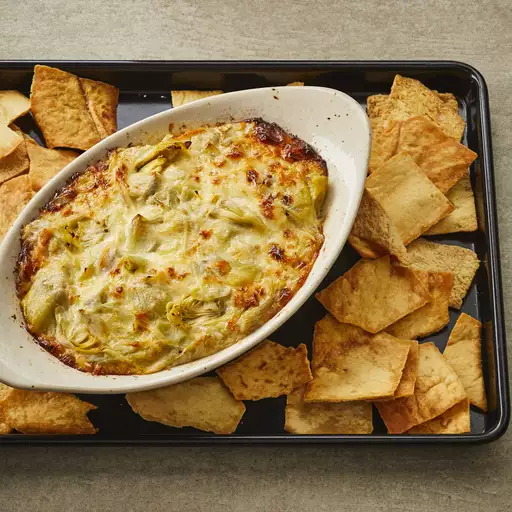

Artichoke Dip Recipe

Description
A deliciously creamy artichoke dip that's incredibly easy to make.
Serve warm with sliced baguettes or pita chips.
Ingredients
- 1 (14 ounce) can artichoke hearts, drained and chopped
- 1 cup mayonnaise
- 1 cup grated Parmesan cheese
Steps
- Preheat the oven to 375 degrees F (190 degrees C).
- Mix artichoke hearts, mayonnaise, and Parmesan cheese together in a bowl until
well combined. Spread mixture in a 9x13-inch baking dish.
- Bake in the preheated oven until bubbly and golden brown, about 15 to 20 minutes.